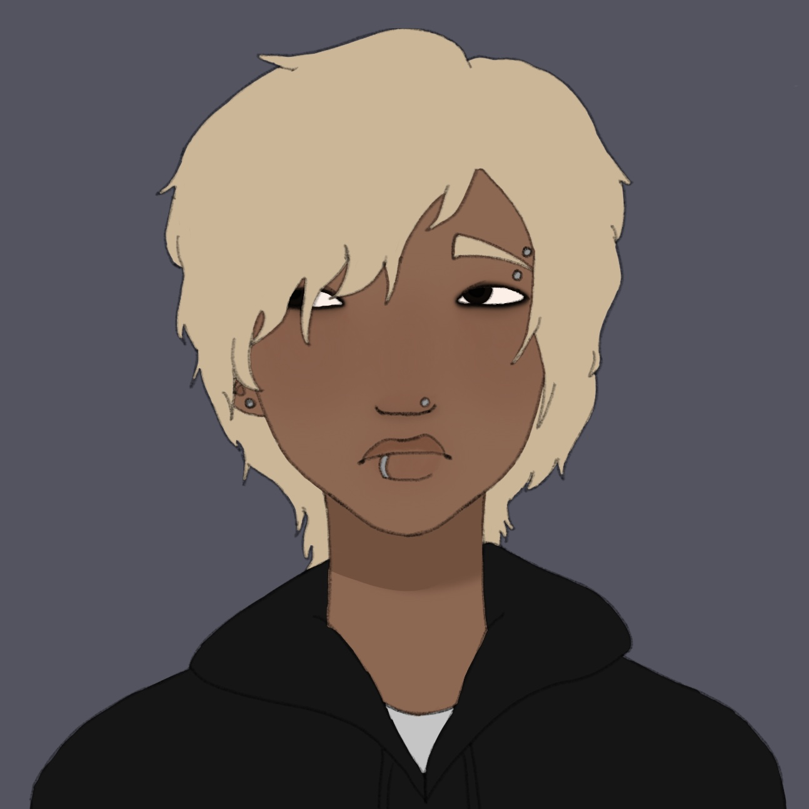

Casey Ramírez-Fernández
Description

Akasi "Casey" Reyes Ramírez-Fernández is a fictional character from Miles Charles' fictional horror story titled St. Adelaide. He is the story's deuteragonist and the second character introduced in the story. He's a 20 year old mixed Mexican-Filipino man who recently moved to St. Adelaide. He originally meant to move to a new city, but ends up in St. Adelaide for reasons unknown to him. He attemps to leave, but finds that getting help is difficult, and any outside routes are unavailable to him for the time being. He uses some of his money to rent a place to stay and decides he'll settle in briefly until he can catch the next bus or train. That is, until he meets Cameron, who soon helps him to realize that he is unsafe here. Through Cameron's assistance, Casey continues his quest to leave St. Adelaide for good.
Background
He was born outside of St. Adelaide and grew up in a well-adjusted family. While he faced bullying in high school for traits outside of his control, he never let that change who he is. His parents placed a lot of pressure on him to graduate college and work a high paying job, regardless of whether it was what he wanted or not. Since he wants to make them proud, he agrees to this. He maintains good grades in school and makes it on to college, where he finds the pressure is too much for him. He eventually drops out and leaves home, after countless nights of hearing his parents argue over his decisions. He takes a train hoping to enter a new city, but instead stumbles into St. Adelaide. After days of trying to figure out how he could leave, he gives up and settles in, using his remaining money to rent a cheap apartment and get a new job, believing that after some time he’ll have enough money to catch the next train… whenever that may be.